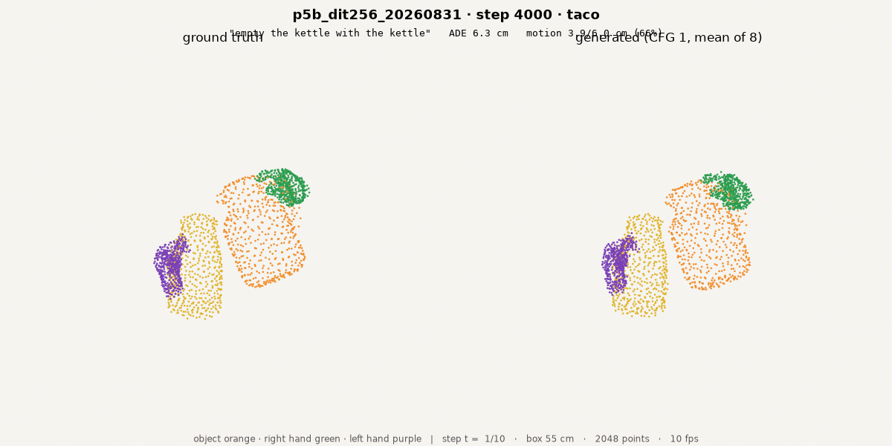
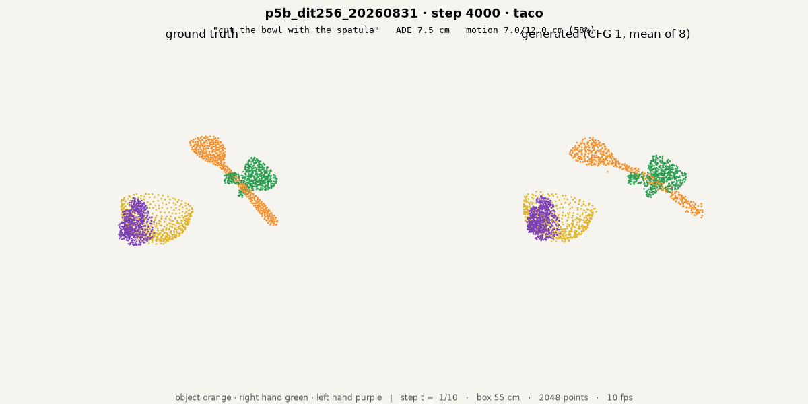

120M base · same chunks at 6.09 epochs; 10.00 pending

taco, chunk 29206, "empty the cup with the kettle" · ADE 2.71 cm

arctic, chunk 1988, "use the capsulemachine" · ADE 7.22 cm

oakink2, chunk 18292, "tidy up the desktop after drawing" · ADE 1.15 cm
WILL UPDATE
120M p7 @180,608 · 10.00 ep
taco 29206, same camera
120M p7 @180,608 · 10.00 ep
taco 29206, same camera
WILL UPDATE
120M p7 @180,608 · 10.00 ep
arctic 1988, same camera
120M p7 @180,608 · 10.00 ep
arctic 1988, same camera
WILL UPDATE
320M @10.00 ep
oakink2 18292, same camera
320M @10.00 ep
oakink2 18292, same camera
same chunk ids, camera and seed in every column · left half ground truth, right half prediction · sources results/iviz/i5_110k/clips/
Rollouts · replanning from truth vs from its own prediction

teacher-forced · 1 s chunks · full episode

teacher-forced · 1 s chunks · full episode

teacher-forced · 1 s chunks · full episode

self-predicted · 1 s chunks · full episode

self-predicted · 1 s chunks · full episode

self-predicted · 1 s chunks · full episode
| cos per chunk index · 120M @110k · 6.09 ep | 0 | 2 | 4 | 20 chunks |
|---|---|---|---|---|
| teacher-forced | 0.19 | 0.37 | 0.19 | 3.5–9 cm/chunk |
| self-predicted | 0.19 | 0.04 | −0.01 | saturates ~30 cm |
top row re-observes ground truth at each chunk start; bottom row feeds its own predicted frames back in · sources results/iroll/i5_110k_{teacher,ar}/
Appendix · cross-embodiment pair clips · 320M cancelled




| same chunks · ADE cm | 320M @1.77 ep | 320M+robot @1.77 ep | 120M @6.09 ep |
|---|---|---|---|
| taco 29206 | 4.46 | 4.37 | 2.71 |
| arctic 1988 | 7.58 | 7.95 | 7.22 |
| dexycb 4222 | 4.22 | 4.31 | 3.92 |
| oakink2 18292 | 2.99 | 2.92 | 1.15 |
| grab 7984 | 9.46 | 10.36 | 12.75 |
sources: results/iviz/{i5_110k,p4b_4k,p5b_4k}/clips/ · single-chunk open-loop, 10 frames = 1 s